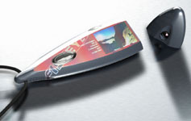
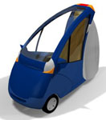

|
Emre
Ergene adlý 26 yaþýndaki bir Türk, tasarladýðý 'Fish Eye'
(balýkgözü) adlý dijital fotoðraf makinesi ile tasarým dünyasýnýn
dikkatlerini üzerine çekti. Saðda görülen tasarým "Alias
Studio" yardýmýyla yapýlmýþtýr.
Halen Ýsveç'te eðitimine devam eden 26 yaþýndaki Ergene, son
olarak tasarladýðý dijital fotoðraf makinesi Design Engine
tarafýndan her yýl geleneksel olarak düzenlenen uluslararasý
bir sergide yer almaya hak kazandý. Ergene'nin daha önceki
tasarýmlarý arasýnda ise Ýsveç'li telekom firmasý Koftel Group
için LCD ekranlý konferans telefon, motosiklet firmasý Ducati
için saat ve bisiklet bulunuyor...
'Fish
Eye' (balýk gözü) iki parçaya ayrýlabilen bir ürün ve kolaylýkla
herhangi bir cepte taþýnabiliyor. Balýkgözü, üzerindeki özelliklerle
birlikte gelecekte teknolojilerinin dijital fotoðraf makinelerinde
ne gibi yeni deðerler katabileceðini yansýtýyor. Cihazýn tüm
dýþ yüzeyi LCD ekran ile kaplý. Bu sayede görünebilir tüm
yüzey kullanýcý arayüzü olarak kullanýlabiliyor. Yeni model
fotoðraf makinesinde, objektif gövdeden ayrýlýyor. Böylelikle
objektif baþka yerde iken kamera elde tutulup eldeki ekraný
kullanarak fotoðraf çekmek mümkün oluyor...
Lisans
eðitimini ODTÜ'nden alan Ergene, okulu bitirmesinin ardýndan
bir süreliðine Türkiye'de çeþitli firmalarýn tasarým ve iþ
geliþtirme bölümlerinde çalýþmýþ. Ergene, bir yýl önce Ýnfotron'da
çalýþýrken yüksek lisans eðitimi için Ýsveç'teki "UMEA
Institute of Design" tarafýndan kabul edilmiþ. Emre
Ergene halen, mezunlarýnýn Nokia, Ericsson, Lego, Volvo, Saab
ve Smart Design gibi firmalarda tasarýmcý olarak çalýþtýðý
Institute of Design'daki eðitimine devam ediyor.
Daha
Fazla Bilgi için:
Yarýþma
ile ilgili web sitesi:
www.design-engine.com/competition/photoreal2002.htm
Photoreal design competition
Emre Ergene, Fish Eye (Alias Studio)
Umea, Sweden
Saðdaki
resim: Emre Ergene'nin Rhino ile modellediði bir 3 tekerlekli
küçük otomobil tasarýmý Rhino web sitesinde yayýnlanýyor (Bu
aracýn tasarýmý ÝTÜ Endüstri Ürünleri Tasarýmý Bölümü Öðrencisi
Senem Tunay tarafýndan yapýlmýþtýr:
www.rhino3d.com/gallery/vehicle/scatter.htm
Emre Ergene kiþisel
web sitesinde tasarýmlarýna ait daha fazla bilgi ve resimler
bulunmaktadýr: www.emreergene.com
|

{kind=link}